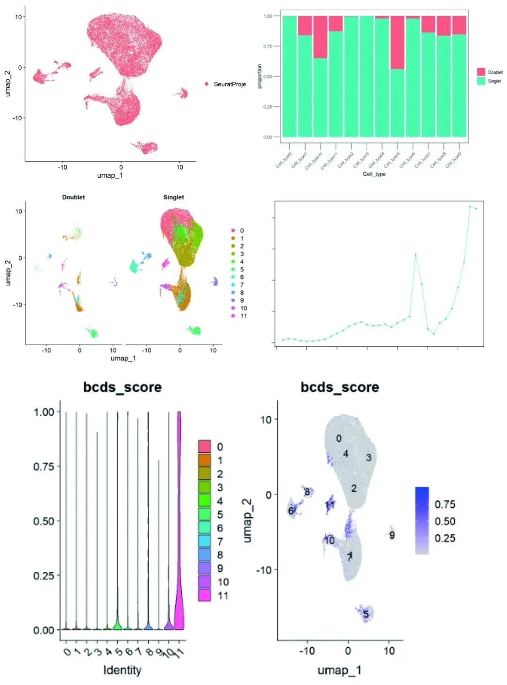
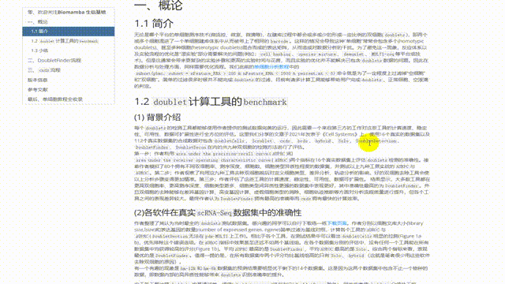

scRNA-Seq双细胞过滤手册
原文：https://mp.weixin.qq.com/s?__biz=MzAwMzIzOTk5OQ==&mid=2247511622&idx=1&sn=60b35668e569267bab14ec8fbba8bd74&chksm=9b3cd716ac4b5e00122eac47f55085198040a4a0e97c56895bbc39f3a9f1a1eb4eba27048a8f#rd 合集：单细胞教程全收录

学习手册

 无论是哪个平台的单细胞测序技术(微流控、微室、微滴等)，在建库过程中都会或多或少的形成一定比例的双细胞(doublets)，即两个或多个 细胞混进了一个单细胞建库体系中从而被带上了相同的barcode 。这样的情况会导致这种”单细胞”常常会包含多个(homotypic doublets)、甚至多种细胞(heterotypic doublets)混合而成的表达矩阵，从而造成对数据分析的干扰。为了避免这一现象，反应体系以及实验流程的优化是”湿实验”部分需要解决的问题(例如：cell hashing、species mixture、demuxlet、MULTI-seq等平台或技术)。但是这通常会带来更复杂的实验步骤和更高的实验时间与花费，而且实验的优化并不能解决已包含doublets数据的问题。因此在数据分析与处理 方面，同样需要优化流程。。简单的过滤很多时候并不能完成doublets的过滤，目前有诸多计算工具能够帮助用户完成doublets、正常细胞、空液滴的判定。本次学习手册，我们先从绪论 说起，带大家一同比较doubletCells, Scrublet, cxds, bcds, hybrid, Solo, DoubletDetection, DoubletFinder等工具在双细胞预测表现中的优劣(benchmarking)，再进行DoubletFinder与cxds工具的实操流程讲解 。不熟悉分析过程的同学可以先行学习：scRNA-Seq学习手册Seurat V4修订版另外本手册涉及到的包比较占内存，硬件跟不上的同学可以参考：足够支持你完成硕博生涯的生信环境
分析图片集锦
无论是哪个平台的单细胞测序技术(微流控、微室、微滴等)，在建库过程中都会或多或少的形成一定比例的双细胞(doublets)，即两个或多个 细胞混进了一个单细胞建库体系中从而被带上了相同的barcode 。这样的情况会导致这种”单细胞”常常会包含多个(homotypic doublets)、甚至多种细胞(heterotypic doublets)混合而成的表达矩阵，从而造成对数据分析的干扰。为了避免这一现象，反应体系以及实验流程的优化是”湿实验”部分需要解决的问题(例如：cell hashing、species mixture、demuxlet、MULTI-seq等平台或技术)。但是这通常会带来更复杂的实验步骤和更高的实验时间与花费，而且实验的优化并不能解决已包含doublets数据的问题。因此在数据分析与处理 方面，同样需要优化流程。。简单的过滤很多时候并不能完成doublets的过滤，目前有诸多计算工具能够帮助用户完成doublets、正常细胞、空液滴的判定。本次学习手册，我们先从绪论 说起，带大家一同比较doubletCells, Scrublet, cxds, bcds, hybrid, Solo, DoubletDetection, DoubletFinder等工具在双细胞预测表现中的优劣(benchmarking)，再进行DoubletFinder与cxds工具的实操流程讲解 。不熟悉分析过程的同学可以先行学习：scRNA-Seq学习手册Seurat V4修订版另外本手册涉及到的包比较占内存，硬件跟不上的同学可以参考：足够支持你完成硕博生涯的生信环境
分析图片集锦

-Biomamba

所见即所得
学习手册可直接用浏览器打开：

下载的资料内容：

解锁前需阅读：龙年订阅须知

文末还可解锁以下内容


，龙年订阅合集持续更新中，联系客服微信[Biomamba_yunying]可以以119￥获取全部资料(包括今年后面更新的内容)。当然，付费不是目的，以下资料都可以通过转发领取(更推荐这种方式)。
龙年订阅须知
单细胞Figure 1常见图表
快速上手Seurat V5
机器学习基础手册
scRNA-Seq学习手册Seurat V4修订版
Bulk RNASeq| 转录组实战

订阅后获取学习手册下载链接：